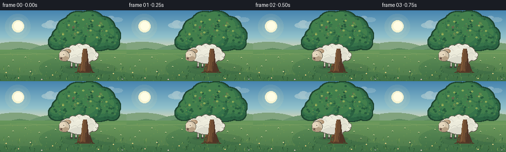
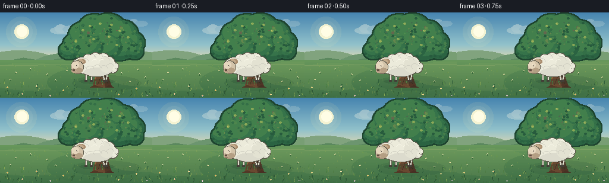
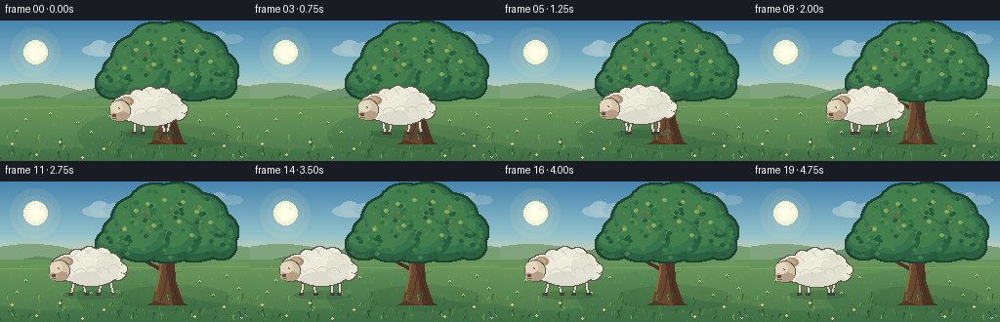
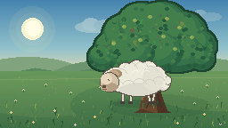
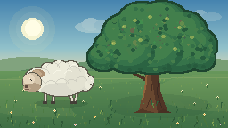
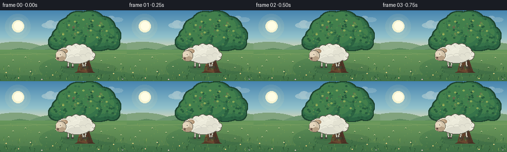
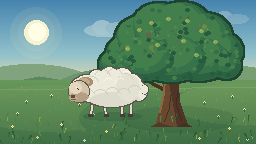
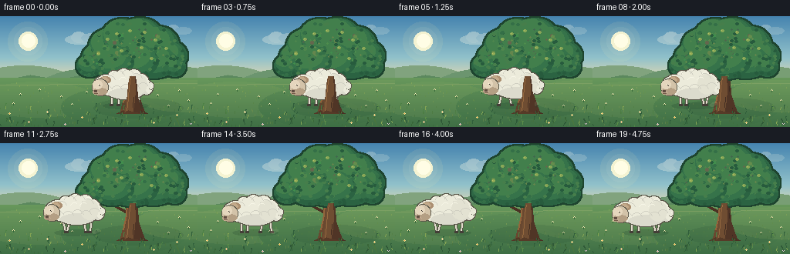

CODING AGENTS AS PIXEL WORLD MODELS
traex/DeepSeek-V4.1-Flash · instance_preservation_0056
点击播放 · 原生 RGB 像素
逐轮保存的候选
回放视频、检查图与代码变化。
每份候选均可单独播放。实际图片检查记录在下方工具轨迹中。
候选 01播放与检查图
点击播放 · 原生 RGB 像素

展开代码变化
--- 上一保存版本
+++ 本次保存版本
@@ -0,0 +1,399 @@
+from __future__ import annotations
+
+import math
+import random
+from pathlib import Path
+
+import numpy as np
+from PIL import Image, ImageChops, ImageDraw, ImageFilter
+
+from artifact_io import save
+
+
+W, H = 256, 144
+FPS = 4
+FRAME_COUNT = 20
+
+
+def mix(a: tuple[int, int, int], b: tuple[int, int, int], t: float) -> tuple[int, int, int]:
+ return tuple(round(a[i] + (b[i] - a[i]) * t) for i in range(3))
+
+
+def ellipse_mask(size: tuple[int, int], shapes: list[tuple[int, int, int, int]]) -> Image.Image:
+ mask = Image.new("L", size, 0)
+ draw = ImageDraw.Draw(mask)
+ for box in shapes:
+ draw.ellipse(box, fill=255)
+ return mask
+
+
+def paste_mask(base: Image.Image, color: tuple[int, int, int], mask: Image.Image) -> None:
+ layer = Image.new("RGBA", base.size, (*color, 255))
+ base.alpha_composite(Image.composite(layer, Image.new("RGBA", base.size, (0, 0, 0, 0)), mask))
+
+
+def draw_sky(image: Image.Image) -> None:
+ draw = ImageDraw.Draw(image)
+ top = (70, 132, 175)
+ middle = (145, 193, 202)
+ horizon = (241, 221, 171)
+ for y in range(88):
+ t = y / 87
+ if t < 0.62:
+ color = mix(top, middle, t / 0.62)
+ else:
+ color = mix(middle, horizon, (t - 0.62) / 0.38)
+ draw.line((0, y, W, y), fill=color)
+
+ glow = Image.new("RGBA", image.size, (0, 0, 0, 0))
+ gd = ImageDraw.Draw(glow)
+ gd.ellipse((10, 7, 61, 58), fill=(255, 239, 171, 22))
+ gd.ellipse((18, 14, 54, 50), fill=(255, 244, 192, 36))
+ gd.ellipse((24, 20, 48, 44), fill=(255, 249, 211, 235))
+ gd.ellipse((28, 23, 45, 40), fill=(255, 253, 229, 255))
+ image.alpha_composite(glow)
+
+ clouds = Image.new("RGBA", image.size, (0, 0, 0, 0))
+ cd = ImageDraw.Draw(clouds)
+ for box, alpha in [
+ ((84, 24, 123, 36), 74),
+ ((92, 20, 111, 34), 90),
+ ((105, 22, 132, 34), 68),
+ ((207, 14, 239, 24), 48),
+ ((216, 11, 232, 23), 64),
+ ((226, 14, 248, 23), 43),
+ ]:
+ cd.ellipse(box, fill=(255, 251, 232, alpha))
+ image.alpha_composite(clouds)
+
+
+def draw_landscape(image: Image.Image) -> None:
+ draw = ImageDraw.Draw(image)
+
+ # Hazy, stepped hills keep the horizon calm behind the tree and sheep.
+ draw.ellipse((-45, 64, 107, 128), fill=(129, 163, 126))
+ draw.ellipse((44, 68, 190, 132), fill=(108, 149, 111))
+ draw.ellipse((143, 65, 305, 132), fill=(120, 158, 116))
+ draw.polygon([(0, 84), (39, 76), (76, 82), (116, 74), (158, 83), (206, 75), (256, 82), (256, 108), (0, 108)],
+ fill=(91, 136, 94))
+
+ ground_top = (103, 151, 91)
+ ground_bottom = (63, 111, 69)
+ for y in range(80, H):
+ t = (y - 80) / (H - 81)
+ draw.line((0, y, W, y), fill=mix(ground_top, ground_bottom, t))
+
+ # Soft field bands and a few distant hedgerows.
+ bands = Image.new("RGBA", image.size, (0, 0, 0, 0))
+ bd = ImageDraw.Draw(bands)
+ bd.ellipse((-28, 85, 124, 131), fill=(150, 178, 104, 32))
+ bd.ellipse((79, 91, 242, 144), fill=(50, 100, 64, 28))
+ bd.ellipse((174, 83, 308, 124), fill=(160, 181, 102, 30))
+ bd.line((0, 89, 256, 87), fill=(219, 209, 139, 52), width=1)
+ image.alpha_composite(bands)
+
+ rng = random.Random(4021)
+ for _ in range(180):
+ x = rng.randrange(0, W)
+ y = rng.randrange(86, H)
+ depth = (y - 86) / (H - 86)
+ color = mix((113, 157, 85), (58, 103, 59), depth)
+ if rng.random() < 0.35:
+ color = mix(color, (173, 183, 105), 0.23)
+ length = 1 if depth < 0.55 else rng.choice((1, 2, 2, 3))
+ draw.line((x, y, x, min(H - 1, y + length)), fill=color)
+
+ # A few tiny flowers in the middle distance.
+ flower_positions = [(26, 101), (51, 95), (79, 104), (112, 98), (204, 102),
+ (232, 96), (244, 109), (17, 113), (93, 114), (218, 116)]
+ for x, y in flower_positions:
+ draw.line((x, y, x, y + 2), fill=(54, 104, 58))
+ draw.point((x - 1, y), fill=(246, 232, 170))
+ draw.point((x + 1, y), fill=(246, 232, 170))
+ draw.point((x, y - 1), fill=(255, 246, 200))
+
+
+def draw_tree_shadow(image: Image.Image) -> None:
+ overlay = Image.new("RGBA", image.size, (0, 0, 0, 0))
+ draw = ImageDraw.Draw(overlay)
+ draw.ellipse((121, 106, 237, 132), fill=(26, 62, 44, 34))
+ draw.ellipse((142, 110, 207, 129), fill=(24, 57, 40, 28))
+ image.alpha_composite(overlay)
+
+
+def draw_tree(image: Image.Image) -> None:
+ draw = ImageDraw.Draw(image)
+
+ # Branch silhouette behind the canopy.
+ branch_color = (75, 49, 35)
+ draw.line((169, 84, 151, 57), fill=branch_color, width=7)
+ draw.line((172, 79, 193, 47), fill=branch_color, width=8)
+ draw.line((170, 68, 142, 44), fill=branch_color, width=5)
+ draw.line((173, 60, 207, 37), fill=branch_color, width=6)
+ draw.line((166, 91, 128, 70), fill=branch_color, width=4)
+
+ trunk = [(155, 126), (159, 111), (164, 96), (163, 81), (166, 68),
+ (174, 68), (178, 83), (179, 101), (184, 116), (188, 126)]
+ draw.polygon(trunk, fill=(105, 72, 48))
+ draw.polygon([(166, 69), (174, 69), (178, 84), (179, 101), (184, 116), (188, 126),
+ (177, 126), (174, 109), (171, 93), (168, 78)], fill=(80, 53, 38))
+ draw.line((160, 112, 164, 93, 165, 79, 169, 70), fill=(146, 101, 60), width=2)
+ draw.line((170, 95, 169, 108, 164, 121), fill=(72, 47, 35), width=1)
+ draw.line((177, 91, 176, 105, 181, 120), fill=(61, 42, 34), width=1)
+ draw.polygon([(151, 126), (159, 122), (164, 124), (172, 126)], fill=(83, 56, 38))
+ draw.polygon([(177, 126), (183, 122), (191, 126)], fill=(72, 48, 35))
+
+ clusters = [
+ (128, 53, 22, 18),
+ (141, 39, 26, 23),
+ (159, 28, 28, 25),
+ (181, 27, 30, 25),
+ (204, 36, 27, 23),
+ (220, 51, 22, 19),
+ (198, 58, 33, 22),
+ (171, 57, 35, 24),
+ (145, 58, 29, 22),
+ (116, 64, 17, 14),
+ (226, 65, 14, 13),
+ ]
+ mask_shapes = [(x - rx, y - ry, x + rx, y + ry) for x, y, rx, ry in clusters]
+ mask = ellipse_mask(image.size, mask_shapes)
+ outline = mask.filter(ImageFilter.MaxFilter(5))
+
+ canopy = Image.new("RGBA", image.size, (0, 0, 0, 0))
+ dark_layer = Image.new("RGBA", image.size, (30, 68, 47, 255))
+ canopy.alpha_composite(Image.composite(dark_layer, Image.new("RGBA", image.size, (0, 0, 0, 0)), outline))
+ base_layer = Image.new("RGBA", image.size, (46, 103, 69, 255))
+ canopy.alpha_composite(Image.composite(base_layer, Image.new("RGBA", image.size, (0, 0, 0, 0)), mask))
+
+ detail = Image.new("RGBA", image.size, (0, 0, 0, 0))
+ dd = ImageDraw.Draw(detail)
+ rng = random.Random(927)
+
+ # Broad leafy planes: shadow low/right, sunlit crowns high/left.
+ for x, y, rx, ry in clusters:
+ dd.ellipse((x - rx + 3, y - ry + 4, x + rx - 1, y + ry - 1), fill=(39, 91, 61, 92))
+ dd.ellipse((x - rx + 2, y - ry + 1, x + rx - 5, y + ry - 7), fill=(61, 126, 78, 132))
+ dd.ellipse((x - rx + 3, y - ry + 1, x + rx - 12, y + ry - 13), fill=(91, 155, 85, 116))
+
+ highlight_centers = [(136, 35), (158, 27), (180, 25), (203, 33), (149, 48),
+ (176, 47), (202, 49), (125, 55)]
+ for x, y in highlight_centers:
+ for _ in range(9):
+ ox = rng.randint(-10, 10)
+ oy = rng.randint(-8, 8)
+ radius = rng.choice((1, 1, 1, 2))
+ dd.ellipse((x + ox - radius, y + oy - radius, x + ox + radius, y + oy + radius),
+ fill=(rng.choice((121, 172, 91)), rng.choice((176, 191, 104)), 88, 110))
+
+ # Small cut-out leaf clusters make the edge less geometric.
+ for x, y, rx, ry in clusters:
+ for _ in range(13):
+ angle = rng.uniform(0, math.tau)
+ px = round(x + math.cos(angle) * rng.uniform(rx * 0.72, rx * 0.98))
+ py = round(y + math.sin(angle) * rng.uniform(ry * 0.72, ry * 0.98))
+ color = rng.choice(((34, 82, 55, 150), (57, 118, 73, 135), (96, 151, 82, 120)))
+ dd.ellipse((px - 2, py - 1, px + 2, py + 2), fill=color)
+
+ detail_alpha = ImageChops.multiply(detail.getchannel("A"), mask)
+ detail.putalpha(detail_alpha)
+ canopy.alpha_composite(detail)
+
+ # A few warm leaves catching the sun.
+ warm = Image.new("RGBA", image.size, (0, 0, 0, 0))
+ wd = ImageDraw.Draw(warm)
+ for x, y in [(139, 29), (151, 22), (168, 18), (187, 20), (201, 30), (215, 41),
+ (127, 48), (157, 44), (183, 40), (196, 54)]:
+ wd.ellipse((x - 2, y - 1, x + 2, y + 2), fill=(179, 192, 92, 155))
+ wd.point((x - 1, y), fill=(211, 206, 113, 200))
+ warm.putalpha(ImageChops.multiply(warm.getchannel("A"), mask))
+ canopy.alpha_composite(warm)
+ image.alpha_composite(canopy)
+
+
+def draw_meadow_details(image: Image.Image) -> None:
+ draw = ImageDraw.Draw(image)
+ rng = random.Random(7703)
+ for _ in range(52):
+ x = rng.randrange(1, W - 1)
+ y = rng.randrange(117, H)
+ color = rng.choice(((77, 129, 69), (92, 142, 72), (48, 94, 59), (132, 164, 83)))
+ height = rng.choice((2, 3, 4, 5))
+ lean = rng.choice((-1, 0, 1))
+ draw.line((x, y, x + lean, y - height), fill=color)
+ if height >= 4:
+ draw.line((x + lean, y - height + 1, x + lean + 1, y - height), fill=color)
+
+ for x, y, petal in [(12, 126, (252, 232, 154)), (37, 137, (244, 210, 170)),
+ (61, 124, (248, 239, 190)), (84, 140, (234, 210, 237)),
+ (106, 131, (255, 224, 137)), (229, 128, (250, 230, 160)),
+ (247, 139, (235, 207, 222)), (199, 138, (250, 230, 163))]:
+ draw.line((x, y, x, y + 3), fill=(54, 102, 57))
+ draw.point((x - 1, y), fill=petal)
+ draw.point((x + 1, y), fill=petal)
+ draw.point((x, y - 1), fill=petal)
+ draw.point((x, y + 1), fill=petal)
+ draw.point((x, y), fill=(231, 169, 73))
+
+
+def smoothstep(t: float) -> float:
+ t = max(0.0, min(1.0, t))
+ return t * t * (3 - 2 * t)
+
+
+def sheep_state(frame_index: int) -> tuple[float, float, float, bool]:
+ start_x, end_x = 155.0, 68.0
+ if frame_index <= 2:
+ progress = 0.0
+ elif frame_index >= 16:
+ progress = 1.0
+ else:
+ progress = smoothstep((frame_index - 2) / 14.0)
+ x = start_x + (end_x - start_x) * progress
+ walking = 2 < frame_index < 17
+ phase = (frame_index - 2) * 2.55
+ bob = -abs(math.sin(phase)) * 1.35 if walking else math.sin(frame_index * 0.75) * 0.35
+ return x, 92.0 + bob, phase, walking
+
+
+def draw_leg(draw: ImageDraw.ImageDraw, x0: float, y0: float, foot_dx: float,
+ outline: tuple[int, int, int], wool: tuple[int, int, int]) -> None:
+ knee_x = x0 + foot_dx * 0.45
+ knee_y = y0 + 7
+ foot_x = x0 + foot_dx
+ foot_y = 115
+ draw.line((x0, y0, knee_x, knee_y, foot_x, foot_y), fill=outline, width=4)
+ draw.line((x0, y0, knee_x, knee_y, foot_x, foot_y), fill=wool, width=2)
+ draw.rectangle((round(foot_x) - 2, foot_y - 1, round(foot_x) + 2, foot_y + 1), fill=(67, 62, 55))
+
+
+def draw_sheep(image: Image.Image, frame_index: int) -> None:
+ x, y, phase, walking = sheep_state(frame_index)
+ x = round(x * 2) / 2
+ y = round(y * 2) / 2
+
+ shadow = Image.new("RGBA", image.size, (0, 0, 0, 0))
+ sd = ImageDraw.Draw(shadow)
+ sd.ellipse((x - 29, 112, x + 30, 120), fill=(28, 63, 43, 55))
+ sd.ellipse((x - 21, 113, x + 22, 119), fill=(24, 54, 39, 44))
+ image.alpha_composite(shadow)
+
+ outline = (91, 88, 75)
+ wool = (236, 235, 219)
+ leg_phase = phase if walking else 0.0
+ leg_specs = [
+ (x - 18, y + 8, math.sin(leg_phase) * 4.0),
+ (x - 9, y + 9, math.sin(leg_phase + math.pi) * 4.0),
+ (x + 10, y + 9, math.sin(leg_phase + math.pi * 0.35) * 3.4),
+ (x + 19, y + 8, math.sin(leg_phase + math.pi * 1.35) * 3.4),
+ ]
+ draw = ImageDraw.Draw(image)
+ for lx, ly, dx in leg_specs:
+ draw_leg(draw, lx, ly, dx, outline, (224, 220, 204))
+
+ body_shapes = [
+ (x - 28, y - 14, x + 28, y + 15),
+ (x - 23, y - 21, x - 6, y - 2),
+ (x - 12, y - 24, x + 8, y - 1),
+ (x + 1, y - 23, x + 21, y - 1),
+ (x + 12, y - 17, x + 30, y + 4),
+ (x - 31, y - 8, x - 13, y + 9),
+ (x + 20, y - 9, x + 35, y + 9),
+ ]
+ head_box = (x - 41, y - 13, x - 22, y + 10)
+ ear_box = (x - 33, y - 16, x - 18, y - 7)
+ neck_box = (x - 29, y - 8, x - 15, y + 10)
+ body_mask = ellipse_mask(image.size, body_shapes + [head_box, ear_box, neck_box])
+ body_outline = body_mask.filter(ImageFilter.MaxFilter(3))
+ paste_mask(image, outline, body_outline)
+ paste_mask(image, wool, body_mask)
+
+ sheep = Image.new("RGBA", image.size, (0, 0, 0, 0))
+ sd = ImageDraw.Draw(sheep)
+
+ # Soft wool shading and curls, clipped to the fleece silhouette.
+ shade = Image.new("RGBA", image.size, (0, 0, 0, 0))
+ shd = ImageDraw.Draw(shade)
+ shd.ellipse((x - 22, y + 1, x + 29, y + 17), fill=(190, 190, 178, 88))
+ shd.ellipse((x + 5, y - 17, x + 28, y + 9), fill=(205, 203, 187, 72))
+ for cx, cy, r in [(-20, -8, 7), (-9, -14, 8), (3, -15, 8), (14, -10, 8),
+ (-23, 4, 6), (23, 1, 7), (-11, 5, 7), (1, 4, 8), (12, 4, 7)]:
+ shd.arc((x + cx - r, y + cy - r, x + cx + r, y + cy + r), 200, 350,
+ fill=(170, 170, 159, 108), width=1)
+ shade.putalpha(ImageChops.multiply(shade.getchannel("A"), body_mask))
+ sheep.alpha_composite(shade)
+
+ highlight = Image.new("RGBA", image.size, (0, 0, 0, 0))
+ hd = ImageDraw.Draw(highlight)
+ for cx, cy, r in [(-19, -14, 6), (-8, -19, 7), (4, -19, 7), (15, -14, 6),
+ (-3, -8, 5), (9, -8, 5)]:
+ hd.arc((x + cx - r, y + cy - r, x + cx + r, y + cy + r), 198, 320,
+ fill=(255, 254, 239, 150), width=1)
+ highlight.putalpha(ImageChops.multiply(highlight.getchannel("A"), body_mask))
+ sheep.alpha_composite(highlight)
+
+ # Face and ear sit over the fleece; the head is deliberately large enough to read at 256 px.
+ face = (211, 195, 169)
+ face_shadow = (180, 159, 132)
+ sd.ellipse((x - 33, y - 14, x - 19, y - 5), fill=(171, 143, 113))
+ sd.ellipse((x - 33, y - 13, x - 22, y - 6), fill=(195, 170, 139))
+ sd.ellipse((x - 43, y - 11, x - 22, y + 11), fill=outline)
+ sd.ellipse((x - 42, y - 10, x - 23, y + 10), fill=face)
+ sd.ellipse((x - 42, y + 1, x - 23, y + 10), fill=face_shadow)
+ sd.ellipse((x - 42, y - 9, x - 30, y + 2), fill=(229, 214, 189))
+ sd.ellipse((x - 42, y + 5, x - 34, y + 9), fill=(195, 171, 145))
+ sd.rectangle((x - 40, y + 4, x - 37, y + 6), fill=(96, 75, 64))
+ sd.line((x - 40, y + 8, x - 36, y + 8), fill=(118, 91, 74))
+ sd.point((x - 34, y - 3), fill=(47, 43, 39))
+ sd.point((x - 33, y - 2), fill=(47, 43, 39))
+ sd.point((x - 35, y - 4), fill=(255, 248, 222))
+ # Direct face drawing is opaque and already in the correct layer order.
+ image.alpha_composite(sheep)
+
+ # Tail tuft and a tiny eye glint.
+ draw = ImageDraw.Draw(image)
+ draw.ellipse((x + 30, y - 7, x + 37, y + 3), fill=outline)
+ draw.ellipse((x + 30, y - 6, x + 36, y + 2), fill=(232, 231, 216))
+ draw.point((x + 34, y - 2), fill=(255, 253, 235))
+
+ if walking and frame_index in (5, 8, 11, 14):
+ dust = Image.new("RGBA", image.size, (0, 0, 0, 0))
+ dd = ImageDraw.Draw(dust)
+ dd.ellipse((x + 20, 113, x + 27, 117), fill=(225, 213, 168, 38))
+ dd.ellipse((x + 24, 111, x + 30, 115), fill=(237, 225, 181, 26))
+ image.alpha_composite(dust)
+
+
+def foreground_grass(image: Image.Image) -> None:
+ draw = ImageDraw.Draw(image)
+ rng = random.Random(551)
+ for _ in range(22):
+ x = rng.randrange(0, W)
+ y = rng.randrange(136, H)
+ color = rng.choice(((47, 88, 55), (57, 102, 57), (74, 117, 62)))
+ height = rng.choice((4, 5, 6, 7))
+ lean = rng.choice((-2, -1, 1, 2))
+ draw.line((x, y, x + lean, y - height), fill=color)
+ draw.line((x + lean, y - height + 2, x + lean + rng.choice((-1, 1)), y - height), fill=color)
+
+
+def make_frame(frame_index: int) -> np.ndarray:
+ image = Image.new("RGBA", (W, H), (0, 0, 0, 255))
+ draw_sky(image)
+ draw_landscape(image)
+ draw_tree_shadow(image)
+ draw_tree(image)
+ draw_meadow_details(image)
+ draw_sheep(image, frame_index)
+ foreground_grass(image)
+ return np.asarray(image.convert("RGB"), dtype=np.uint8)
+
+
+def main() -> None:
+ case_dir = Path(__file__).resolve().parent
+ frames = np.stack([make_frame(i) for i in range(FRAME_COUNT)], axis=0)
+ save(frames, case_dir)
+
+
+if __name__ == "__main__":
+ main()
候选 02播放与检查图
点击播放 · 原生 RGB 像素


展开代码变化
--- 上一保存版本
+++ 本次保存版本
@@ -242,16 +242,16 @@
def sheep_state(frame_index: int) -> tuple[float, float, float, bool]:
- start_x, end_x = 155.0, 68.0
- if frame_index <= 2:
+ start_x, end_x = 162.0, 68.0
+ if frame_index <= 3:
progress = 0.0
elif frame_index >= 16:
progress = 1.0
else:
- progress = smoothstep((frame_index - 2) / 14.0)
+ progress = smoothstep((frame_index - 3) / 13.0)
x = start_x + (end_x - start_x) * progress
- walking = 2 < frame_index < 17
- phase = (frame_index - 2) * 2.55
+ walking = 3 < frame_index < 17
+ phase = (frame_index - 3) * 2.55
bob = -abs(math.sin(phase)) * 1.35 if walking else math.sin(frame_index * 0.75) * 0.35
return x, 92.0 + bob, phase, walking
@@ -364,6 +364,28 @@
image.alpha_composite(dust)
+def draw_foreground_tree_base(image: Image.Image, frame_index: int) -> None:
+ draw = ImageDraw.Draw(image)
+ x = 171 + round(math.sin(frame_index * 0.55) * 1.2)
+
+ # Restore only the narrow foreground strip of the trunk after the sheep is
+ # drawn, so the sheep visibly passes behind it rather than sliding over it.
+ draw.polygon([(x - 10, 126), (x - 8, 114), (x - 6, 101), (x - 5, 88),
+ (x - 3, 78), (x + 4, 78), (x + 6, 91), (x + 7, 104),
+ (x + 10, 118), (x + 12, 126)],
+ fill=(111, 77, 50))
+ draw.polygon([(x + 1, 126), (x + 4, 110), (x + 5, 94), (x + 4, 80),
+ (x + 4, 78), (x + 6, 91), (x + 7, 104), (x + 10, 118),
+ (x + 12, 126)], fill=(80, 53, 38))
+ draw.line((x - 7, 122, x - 5, 106, x - 4, 91, x - 2, 80), fill=(148, 104, 63), width=1)
+ draw.line((x + 2, 105, x + 1, 118), fill=(66, 45, 34), width=1)
+ draw.polygon([(x - 12, 126), (x - 5, 122), (x + 2, 124), (x + 13, 126)], fill=(86, 58, 39))
+
+ for gx, gy, gh in [(x - 15, 128, 4), (x - 13, 129, 3), (x + 12, 128, 5), (x + 15, 129, 3)]:
+ draw.line((gx, gy, gx - 1, gy - gh), fill=(50, 93, 56))
+ draw.line((gx + 1, gy, gx + 2, gy - gh + 1), fill=(74, 118, 60))
+
+
def foreground_grass(image: Image.Image) -> None:
draw = ImageDraw.Draw(image)
rng = random.Random(551)
@@ -385,6 +407,7 @@
draw_tree(image)
draw_meadow_details(image)
draw_sheep(image, frame_index)
+ draw_foreground_tree_base(image, frame_index)
foreground_grass(image)
return np.asarray(image.convert("RGB"), dtype=np.uint8)
候选 03播放与检查图
点击播放 · 原生 RGB 像素

展开代码变化
--- 上一保存版本
+++ 本次保存版本
@@ -364,28 +364,6 @@
image.alpha_composite(dust)
-def draw_foreground_tree_base(image: Image.Image, frame_index: int) -> None:
- draw = ImageDraw.Draw(image)
- x = 171 + round(math.sin(frame_index * 0.55) * 1.2)
-
- # Restore only the narrow foreground strip of the trunk after the sheep is
- # drawn, so the sheep visibly passes behind it rather than sliding over it.
- draw.polygon([(x - 10, 126), (x - 8, 114), (x - 6, 101), (x - 5, 88),
- (x - 3, 78), (x + 4, 78), (x + 6, 91), (x + 7, 104),
- (x + 10, 118), (x + 12, 126)],
- fill=(111, 77, 50))
- draw.polygon([(x + 1, 126), (x + 4, 110), (x + 5, 94), (x + 4, 80),
- (x + 4, 78), (x + 6, 91), (x + 7, 104), (x + 10, 118),
- (x + 12, 126)], fill=(80, 53, 38))
- draw.line((x - 7, 122, x - 5, 106, x - 4, 91, x - 2, 80), fill=(148, 104, 63), width=1)
- draw.line((x + 2, 105, x + 1, 118), fill=(66, 45, 34), width=1)
- draw.polygon([(x - 12, 126), (x - 5, 122), (x + 2, 124), (x + 13, 126)], fill=(86, 58, 39))
-
- for gx, gy, gh in [(x - 15, 128, 4), (x - 13, 129, 3), (x + 12, 128, 5), (x + 15, 129, 3)]:
- draw.line((gx, gy, gx - 1, gy - gh), fill=(50, 93, 56))
- draw.line((gx + 1, gy, gx + 2, gy - gh + 1), fill=(74, 118, 60))
-
-
def foreground_grass(image: Image.Image) -> None:
draw = ImageDraw.Draw(image)
rng = random.Random(551)
@@ -407,7 +385,6 @@
draw_tree(image)
draw_meadow_details(image)
draw_sheep(image, frame_index)
- draw_foreground_tree_base(image, frame_index)
foreground_grass(image)
return np.asarray(image.convert("RGB"), dtype=np.uint8)
可观测工具轨迹
实际执行的命令与返回图片。
命令 1exit 0
/bin/bash -c "pwd && rg --files -g 'prompt.txt' -g 'GENERATION_RULES.md' -g 'task_spec.json' -g '"'!*.pyc'"'"
命令 2exit 0
/bin/bash -c "ls -la && find . -maxdepth 2 -type f | sed 's#"'^./##'"' | head -200"
命令 3exit 0
/bin/bash -c 'cat prompt.txt'
命令 4exit 0
/bin/bash -c 'cat GENERATION_RULES.md'
命令 5exit 0
/bin/bash -c 'cat task_spec.json'
命令 6exit 0
/bin/bash -c "sed -n '1,240p' artifact_io.py && sed -n '1,260p' player_template.html"
命令 7exit 0
/bin/bash -c 'python generate.py'
命令 8exit 0
/bin/bash -c "rg -n \"def draw_meadow_details|def smoothstep|def sheep_state|def make_frame\" generate.py && sed -n '280,430p' generate.py"
命令 9exit 0
/bin/bash -c "python generate.py && python - <<'PY'
from pathlib import Path
from PIL import Image
import numpy as np
frames = [np.asarray(Image.open(p).convert('RGB')) for p in sorted(Path('frames').glob('*.png'))]
a = np.stack(frames)
print('frames', a.shape, a.dtype, 'range', int(a.min()), int(a.max()))
print('unique frame colors', len(np.unique(a.reshape(-1,3), axis=0)))
print('mean absolute frame delta', round(float(np.abs(np.diff(a.astype(np.int16), axis=0)).mean()), 3))
for i in (0, 3, 8, 12, 16, 19):
print(i, 'changed from previous:', 0 if i == 0 else int(np.any(frames[i] "'!= frames[i-1], axis=2).sum()))
print('"'artifacts', [str(p) for p in ('generate.py','pixels.npz','index.html','inspection.png') if Path(p).exists()])
PY"命令 10exit 0
/bin/bash -c "python generate.py && python - <<'PY'
from pathlib import Path
from PIL import Image
import numpy as np
p = sorted(Path('frames').glob('*.png'))
a = np.stack([np.asarray(Image.open(x).convert('RGB')) for x in p])
assert a.shape == (20, 144, 256, 3) and a.dtype == np.uint8
assert Path('pixels.npz').exists() and Path('index.html').exists() and Path('inspection.png').exists()
print('shape', a.shape)
print('frame sizes', {Image.open(x).size for x in p})
print('changed pixels between 00 and 19', int(np.any(a[0] "'!= a[19], axis=2).sum()))
print('"'changed pixels between 16 and 19', int(np.any(a[16] "'!= a[19], axis=2).sum()))
print('"'html bytes', Path('index.html').stat().st_size, 'npz bytes', Path('pixels.npz').stat().st_size)
PY"视觉工具实际返回图片 1

视觉工具实际返回图片 2

视觉工具实际返回图片 3

视觉工具实际返回图片 4

视觉工具实际返回图片 5

视觉工具实际返回图片 6

视觉工具实际返回图片 7

保存候选 3 份；完成命令 10 次；可验证图片返回 7 张。原始 API 响应与完整日志保留在本地。